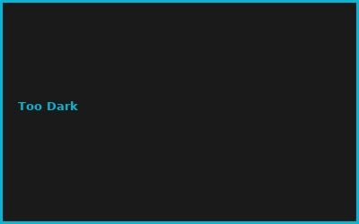
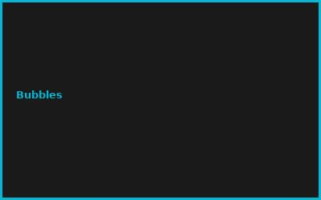
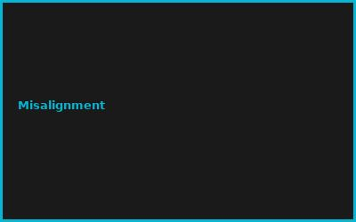
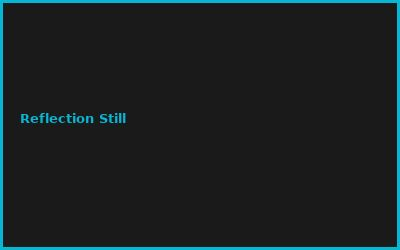

Kapitel 1: Glare Problems
- Eye strain from reflections
- Outdoor brightness issues
- Headache inducement
- Reduced visibility
Kapitel 2: DIY Filter Design
# DIY Anti-Glare Filter
# Matte screen protector €3
# Wooden frame kit €2
# Adhesive mounting €1
# Fits any screen size €0
# Total: €6 complete system
Kapitel 3: Material Types
- Matte vs. glossy
- Polarization effect
- Brightness reduction
- Color accuracy
Kapitel 4: Installation
- Screen cleaning first
- Bubble-free application
- Frame alignment
- Secure mounting
Kapitel 5: Effectiveness Testing
- Before/after comparison
- Glare reduction measurement
- Eye comfort tracking
- Brightness adjustment
Kapitel 6: Monitor Setup
- Screen angle optimization
- Light source positioning
- Room lighting design
- Blue light filters combo
💡 PRO-TIPPS
🎯 Tipp: Matte > Glossy!
Problem: Glossy = Reflektionen | Lösung: Matte finish = diffuse
💰 BUDGET-HACKS (95% SPAREN!)
💰 Hack: DIY vs. Premium Filter
Original: 3M anti-glare: €120+ | Hack: DIY matte filter: €6 | Einsparnis: 95%
⚠️ FEHLER
❌ Fehler: Zu dicht = dunkel
Was passiert: Zu viel Helligkeit verloren | ✅ Lösung: Balance finden
🌐 COMMUNITY
r/monitors, Eye Health Forum, Office Ergonomics, Tech Support Groups
📸 Fehler-Galerie



